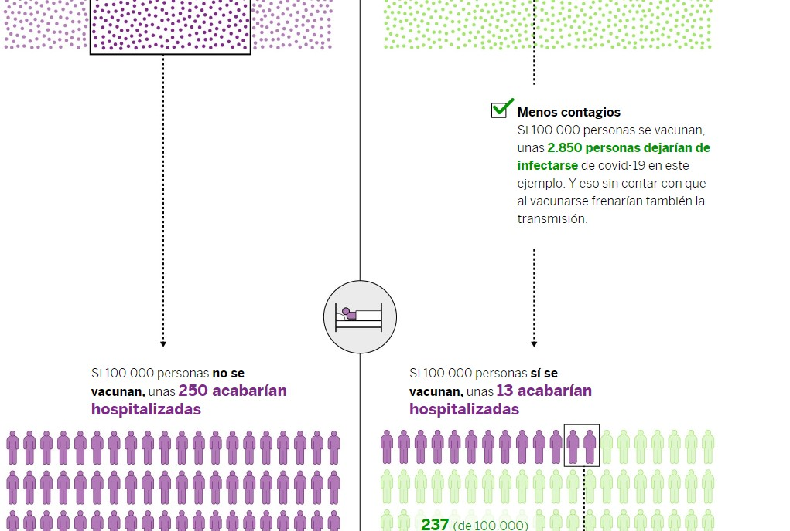
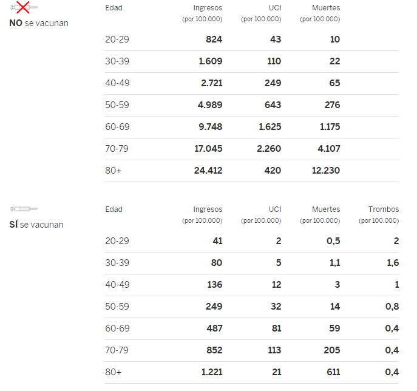

(https://elpais.com/ciencia/2021-04-18/descubre-los-riesgos-y-beneficios-de-las-vacunas-contra-la-covid-segun-tu-edad.html)
En esta simulación nos encontramos un esbozo de lo que sería el efecto de la vacuna y su relación con el coronavirus, en especial tras los efectos secundarios que se detectaron en las vacunas de Astra Zeneca y Janssen. La primera muestra se basaría en 100.000 personas tanto se vacunasen como no.
El primer gráfico utiliza una sémola de puntos morados para señalar cuánta gente se contagiaría con el virus y en verde aquellas personas que se vacunan. Son colores poco alarmantes, pero que simbolizan peligro y salud, así que lo considero una buena elección Así está señalado en una bifurcación con un símbolo de una vacuna tachada o sin tachar dependiendo de querer simbolizar si quiere simbolizar que no se vacunan o no. El total de puntitos debería ser de 3800, ya que es el número que se contagiarían si no hubiese vacuna. De estos 3.800, 2850 dejan de infectarse cuando se vacunan. Se ha decidido hacer de esta forma para que nos demos cuenta de la escala de las 3.800 personas en cada caso. El único problema es que la muestra es de 100.000, y si se quiere alentar a la gente a vacunarse, sigue tratándose de un 3,8% de personas que se pueden contagiar y que da la casualidad de que son muchas personas porque la muestra es muy grande. Por supuesto, luego esas personas podrían contagiar al resto y el número podría ser incluso más grande, pero en ningún momento se menciona en el artículo.

Llegados a este punto, el gráfico seigue descendiendo y conecta la muestra total con la cantidad de gente que acabaría hospitalizada en cada caso. De los 3.800 contagiados, 250 personas acabarían en el hospital. Sin embargo, con la vacuna como factor, solo habrían 13. De nuevo, se representan, esta vez con moñigotes y da la sensación de que estas 250 personas son igual de importantes que los 3.800 infectados, ya que ocupan lo mismo, y que favorece el mensaje que quieren dar. El símbolo de en medio cambia a una cama de hospital, primero leve y luego más grave, lo que es un buen detalle. De estos números, se saca que al final morirían 60 personas por el lado de los que no se han vacunado y 3 por el lado de las vacunas, ambas en negro, y la persona de en medio acabaría con un trombo, en rojo.
Al final, el gráfico representa de forma precisa las incidencias que causarían los datos recogidos hasta entonces. aunque el hecho de representarlo hace que ocupen quizá demasiado. Se especifica la diferencia de casos en cada una de las fases y lo que significa por el otro lado de la balanza. Los datos siguen sin ser tan alarmantes como deberían, pero está claro que vacunarse es más viable que no hacerlo.
Lo que sí que se nota es que las cifras representan una media entre la gente más joven y más anciana. En la siguiente tabla de datos, se divide por grupos de diez años en diez años, primero sin vacuna y luego con vacuna por las cuatro fases de que se han mencionado. La tabla como tal es muy simple, pero le da una mayor urgencia de la que tenía antes, porque conforme la edad va aumentando, las cifras de contagios, hospitalizaciones y defunciones también lo hace. Pone en perspectiva toda la publicidad que se ha hecho con el hecho de ser responsable con las medidas establecidas.

Finalmente, ponen la cantidad de personas contagiadas con la edad del grupo en relación y generan una diferencia incluso mayor por el hecho de vacunarse o no. Este último gráfico es interactivo y en él se puede elegir la probabilidad de contagio y la edad del grupo. Igual que antes, muy sencillo, pero te da una mayor libertad de acción con la información y concluye bien lo que viene siendo la retahila de datos.
Al tratarse de un tema tan delicado como el del coronavirus, no puedes invadir tus gráficos de colorines y de decisiones rimbombantes a la hora de interactuar. Se ha decidido que prime la seriedad y hasta el fondo del artículo muestra esto. Conforme a la cantidad de información que hay en el artículo, la implementación de los artículos es correcta y se asegura que no se relativice. Esta decisión lo hace un poco soso de ver, pero creo que es un precio bien pagado.